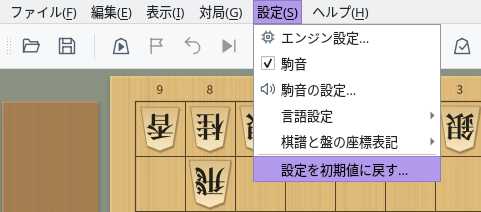
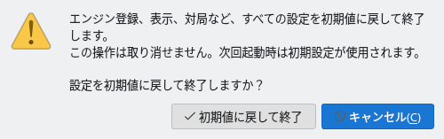

設定の初期化と設定ファイル
すべての設定を初期値に戻す方法と、設定が保存される場所を紹介します
設定を初期値に戻す
「設定」メニューから、エンジン登録を含むすべての設定をまとめて初期値に戻せます
メニューバーの「設定」を開き、いちばん下の「設定を初期値に戻す…」を選びます。メニュードックの「設定」タブにも同じボタンがあります。
この項目は、対局（通信対局を含む）・棋譜解析・検討・詰み探索・局面編集のどれも行っていないときに選べます。これらの実行中は薄く表示され、選べません。


「設定」メニュー：いちばん下に「設定を初期値に戻す…」
「設定の初期化」の確認画面が開きます。「初期値に戻して終了」を押すと、設定を初期値に戻してShogiBoardQを終了します。この操作は取り消せません。
「キャンセル」を押すかEscキーを押すと、何も変更せずに確認画面を閉じます。誤って実行しないよう、確認画面を開いたときは「キャンセル」が選ばれています。


「設定の初期化」の確認画面
通常の終了と同じく、保存していない棋譜や定跡があれば保存するかどうかを確認します。そこで終了を取り消すと、設定は初期化されません。
設定ファイルの中身は、すべてのウィンドウを閉じたあとで消去します。そのため、終了時に保存されるウィンドウの大きさや位置も残りません。ShogiBoardQは自動では再起動しないので、もう一度起動してください。初めて起動したときと同じ初期設定で始まります。
設定ファイルに書き込めなかったときは「設定の初期化に失敗」と表示され、設定ファイルの場所が示されます。保存先の書き込み権限や空き容量を確かめてください。
初期値に戻る設定と残るデータ
消去するのは設定ファイルの中身だけです。棋譜などのファイルや詰将棋の挑戦履歴は残ります
| 対象 | 初期化後 | 補足 |
|---|---|---|
| エンジンの登録とオプション | 初期値に戻る | 登録したエンジンの一覧と、エンジンごとのオプションが消えます。エンジン本体のファイルは消えないので、エンジン登録をやり直せば使えます。 |
| 対局・解析などのダイアログの設定 | 初期値に戻る | 持ち時間、対局者名、棋譜の自動保存先、前回選んだエンジンなど |
| 外観・フォント・駒音 | 初期値に戻る | 駒・将棋盤・背景、GUI全体のフォント、文字の大きさ、駒音のオン・オフと音量など |
| 表示言語・棋譜表記 | 初期値に戻る | 表示言語は「システム設定に従う」、「棋譜と盤の座標表記」は「言語に合わせる」に戻ります |
| ウィンドウとドック | 初期値に戻る | ウィンドウやダイアログの大きさと位置、ドックの配置、保存したドックレイアウト、メニューのお気に入り |
| 最近使ったファイル | 初期値に戻る | 定跡ファイルや局面集の履歴、最後に開いたフォルダ、選んでいた詰将棋の問題集など |
| 保存した棋譜・定跡・局面集などのファイル | 残る | 自分で保存したファイルは消えません |
| 詰将棋対局の挑戦履歴 | 残る | 設定ファイルとは別のデータベースに保存しています（保存場所） |
| キャッシュ | 残る | 駒音の音声や詰将棋の判定結果を一時的に保存したもので、必要に応じて作り直されます |
一部の設定だけを戻したいときは、それぞれの画面で変更します。たとえば「駒音の設定…」には「標準に戻す」、対局ダイアログには「初期設定に戻す」のボタンがあります。
設定ファイルの保存場所
設定は、OSごとに決まったフォルダのShogiBoardQ.iniに保存されます
| OS | 設定ファイル |
|---|---|
| Windows | C:\Users\<ユーザー名>\AppData\Local\ShogiBoardQ\ShogiBoardQ.ini |
| macOS | ~/Library/Preferences/ShogiBoardQ/ShogiBoardQ.ini |
| Linux | ~/.config/ShogiBoardQ/ShogiBoardQ.ini（環境変数XDG_CONFIG_HOMEを設定しているときは$XDG_CONFIG_HOME/ShogiBoardQ/ShogiBoardQ.ini） |
~はホームフォルダ（macOSは/Users/<ユーザー名>、Linuxは/home/<ユーザー名>）です。設定は、配布ZIPを展開したフォルダやAppImageの中ではなく、ユーザーごとのこの場所に保存されます。そのため、新しい版に入れ替えたり、アプリのフォルダを移動したりしても、設定はそのまま引き継がれます。
- Windows：エクスプローラーのアドレスバーに
%LOCALAPPDATA%\ShogiBoardQと入力してEnterキーを押します。 - macOS：Finderで「移動」→「フォルダへ移動…」を選び、
~/Library/Preferences/ShogiBoardQと入力します。「ライブラリ」フォルダは通常は表示されていません。 - Linux：ファイルマネージャーのアドレス欄に
~/.config/ShogiBoardQと入力します。.configは隠しフォルダです。
設定をバックアップするときは、ShogiBoardQを終了してからShogiBoardQ.iniをコピーします。元に戻すときも、ShogiBoardQを終了した状態で同じ場所に置き直します。起動中にファイルを書き換えた内容は、終了時に保存される設定で上書きされることがあります。
ShogiBoardQが起動しないなど、メニューから初期化できないときは、ShogiBoardQを終了した状態でShogiBoardQ.iniを削除するか名前を変えます。次の起動は初期設定で始まります。
| OS | 詰将棋対局の挑戦履歴 | キャッシュ |
|---|---|---|
| Windows | %APPDATA%\ShogiBoardQ | %LOCALAPPDATA%\ShogiBoardQ\cache |
| macOS | ~/Library/Application Support/ShogiBoardQ | ~/Library/Caches/ShogiBoardQ |
| Linux | ~/.local/share/ShogiBoardQ | ~/.cache/ShogiBoardQ |
挑戦履歴はtsume_progress.sqliteに保存されます。「設定を初期値に戻す…」では消えないので、履歴も消したいときは、ShogiBoardQを終了してからこのファイルを削除してください。キャッシュのフォルダは削除してもかまいません（必要になったときに作り直されます）。
Windowsの%APPDATA%はC:\Users\<ユーザー名>\AppData\Roaming、%LOCALAPPDATA%はC:\Users\<ユーザー名>\AppData\Localです。Linuxで環境変数XDG_DATA_HOME・XDG_CACHE_HOMEを設定しているときは、その下のShogiBoardQフォルダになります。